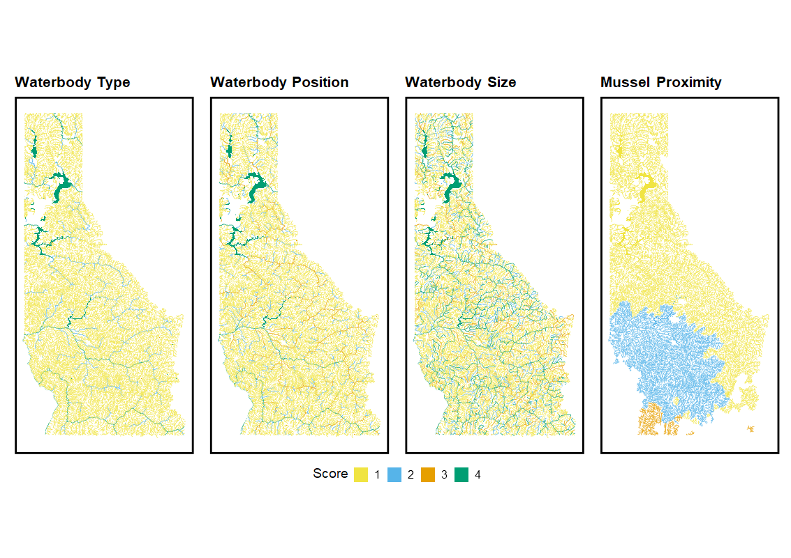
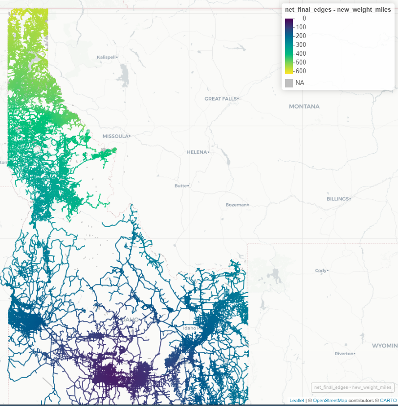

Social Suitability Score Criteria - GIS
sssc.RmdOverview
This is the GIS workflow that covers the social suitability methods used to generate Aquatic Invasive Species (AIS) prioritization in Idaho specifically the Nez-Perce/Clearwater and Idaho Panhandle National Forests. We used methods described by Montana Fish, Wildlife and Parks AIS prioritization for lotic and lentic environments to the best we could.
Methods
The methods used to generate the social suitability scores involve GIS processing in R and/or Python (eventually implementing). The challenging part was not necessarily the geospatial analysis but instead getting the data to work and relate together, e.g. waterbodies and streams/rivers. The first part of the vignette will go over the logic used for the waterbody type, size, and position and how to link them together using Hydrological Unit Codes (HUC) and National Hydrography Dataset Plus Version 2 (NHDPlus V2). This will then follow with the mussel proximity workflow using a road network to find how far away the recently (2023, Snake River near Twin Falls, Idaho) found mussel population is from the waterbodies and streams/rivers. We do not have any angler data or a proxy for this variable right now so this was left out of the analysis.
Our goal with the vignette is to show the steps it took to get to the figure output below. The {aisrisk} package abstracts away these steps into functions but this is the real meat of the workflow and how it was created.

Data
You’ll need the waterbodies, flowlines and HUC 12’s for Idaho via NDHPLus V2. This can be retrieved from various sources but was retrieved via thr nhdplusTools package in R. The waterbodies and flowlines will contain two different geometry types: POLYLINE (flowlines) and MULTIPOLYGON (waterbodies). So be aware when bringing it all together at the end for the final score and why some things are done certain ways.
Waterbody Type
Waterbody type was calculated using the NHDPlus dataset and associated attribute streamorder (Strahler) for streams and rivers and acreage for the waterbodies.
| Waterbody Type | Score |
|---|---|
| Stream/Creek | 1 |
| River | 2 |
| Hatchery water/ small lake < 25 ac | 3 |
| Lake > 25 ac or Very Large River | 4 |
library(sf)
library(tidyverse)
#### waterbodies_idaho and nhdplus_idaho are datasets retrieved prior to doing calculations....
waterbodies_idaho <- read_sf('data/simple_features.gpkg', layer = 'waterbodies_idaho')
nhdplus_idaho <- read_sf('data/simple_features.gpkg', layer = 'nhdplus_idaho')
waterbodies_idaho <- waterbodies_idaho %>%
mutate(area_acres = as.numeric(units::set_units(sf::st_area(.), 'acres')),
waterbody_type = if_else(area_acres<25, 3, 4)
)
nhdplus_idaho <- nhdplus_idaho %>%
mutate(waterbody_type = if_else(streamorde <= 3,1,
if_else(streamorde >3 & streamorde <=5 , 2, 4)))Waterbody Size
Waterbody size is used as a proxy for recreation with the idea that
larger waterbodies and rivers will attract more use. We’ll use the same
datasets we used with Waterbody Type, but will calculate
the qts quartiles for the waterbody part and group
flowlines by name to get lengths.
Get quartiles for the waterbodies.
Get the length of flowlines based on
gnis_name; meaning flowlines with names will be connected by length.
| Waterbody Size | Score |
|---|---|
| <25% or <15km | 1 |
| 26-50% or 16-30km | 2 |
| 51-75% or 30-60km | 3 |
| >75% or >60km | 4 |
### waterbody size
qts <- quantile(waterbodies_idaho$area_acres)
waterbodies_idaho <- waterbodies_idaho %>% mutate(waterbody_size_rec = if_else(area_acres < qts[[2]], 1,
if_else(area_acres >= qts[[2]] & area_acres < qts[[3]], 2,
if_else(area_acres >= qts[[3]] & area_acres < qts[[4]], 3, 4))))
nhdplus_idaho <- nhdplus_idaho %>%
rowwise() %>%
mutate(gnis_name = if_else(gnis_name == ' ', as.character(paste0(paste0(sample(letters, 4), collapse = ''), '_', sample(1:100000000, 1))), gnis_name)) %>%
group_by(gnis_name) %>%
mutate(dist = sum(lengthkm)) %>%
ungroup() %>%
mutate(waterbody_size_rec = if_else(dist < 15, 1,
if_else(dist >= 15 & dist < 30, 2,
if_else(dist >= 30 & dist < 60, 3, 4))))Waterbody Position
Waterbody position was a little trickier for waterbodies (lakes) than the flowlines. There really isn’t a great way to differentiate between the two besides elevation, which is not fully populated with the waterbodies dataset. To account for mountain lake or reservoir (score 3), I just took the elevation of the waterbodies centroid when available andand if no value then it was a larger lake likely in the lowland. This is definitely not perfect, but works for .
| Waterbody Position | Score |
|---|---|
| Mountain Stream | 1 |
| Lowland/Prairie Stream | 2 |
| Mountain Lake/Reservoir or Lowland/Prairie River | 3 |
| Lowland Lake/Reservoir | 4 |
# from visual inspection we can see that lakes with > 300 acres are likely lowland waterbodies
waterbodies_idaho <- waterbodies_idaho %>%
mutate(waterbody_position = if_else(area_acres > 300, 4, NA_real_))
# now get elevations for the ones that are below 300
waterbodies_idaho_filtered <- waterbodies_idaho %>%
filter(is.na(waterbody_position)) %>%
st_centroid() %>%
select(-elevation) %>%
elevatr::get_elev_point()
waterbodies_idaho_filtered <- bind_cols( waterbodies_idaho %>% filter(is.na(waterbody_position)) %>%
select(id, comid) %>% st_drop_geometry(),
waterbodies_idaho_filtered %>% select(ele = 'elevation') %>%
st_drop_geometry())
# then join back with original
### just visually looked at the patterns and most valleys are below 1600 and high mountain lake are above
waterbodies_idaho <- waterbodies_idaho %>%
left_join(waterbodies_idaho_filtered) %>%
mutate(waterbody_position = ifelse(!is.na(waterbody_position), waterbody_position,
ifelse(ele > 1500, 3, 4)))
nhdplus_idaho <- nhdplus_idaho %>%
mutate(waterbody_position = if_else(streamorde <= 2, 1,
if_else(streamorde > 2 & streamorde <=3, 2,
if_else(streamorde > 3 & streamorde <=5 , 3, 4))))Mussel Proximity
Mussel proximity involves calculating the distance via roadways to the nearest mussel population. In Idaho this is the Snake River near Twin Falls but could change so updating will be important. Below is the workflow used to create a road network and then calculate the cost distance from that affected area.
| Mussel Proximity | Score |
|---|---|
| > 400 miles | 1 |
| 300-400 miles | 2 |
| 200-300 miles | 3 |
| < 200 miles | 4 |
First we’ll need to have a roadnetwork that is cleaned. What I mean
be clean is a network that has no multiples, loops, or missing
vertices when crossing over other lines. There are a few ways to do this
but I’d recommend using the planarize tool in
ArcPro to be able to do this quickly (need to find a R
alternative).
library(sfnetworks)
library(arcgis)
library(purrr)
library(tidygraph)
idaho <- AOI::aoi_get(stat = 'Idaho')
id_roads_sf <- arc_select(arc_open('https://gisportalp.itd.idaho.gov/xserver/rest/services/RH_GeneralService/MapServer/1/'))%>%
st_transform(3742)
### this is because of an empty geometry; hopefully you won't have to deal with....
empty_geom <- id_roads_sf %>% st_geometry() %>% map(~is_empty(.x))
id_roads_sf$empty_geom <- unlist(empty_geom)
id_roads_sf <- id_roads_sf %>% filter(empty_geom == FALSE)
# you'll need to figure out how to get your usfs simple feature; here it was local for me.
usfs_roads <- read_sf('Z:/simple_features/roads/r1_rd_core.shp') %>% st_intersection(st_transform(idaho, st_crs(.)))%>%
st_transform(3742)
roads_together <- bind_rows(id_roads_sf%>% filter(SystemCode != 'FD'), usfs_roads) %>% st_as_sf() %>% st_cast('LINESTRING')
########### Or bring in a clean version of the roads for your AOI ########
#roads_mt_id_clean <- read_sf('data/road_mt_id_fs.shp')
# get the mussel locations
mussel_point <- mapedit::drawFeatures() %>% st_transform(crs = st_crs(usfs_roads))
# create a network and check for errors....
# set to conda env
reticulate::use_condaenv(r'{C:\Program Files\ArcGIS\Pro\bin\Python\envs\arcgispro-py3}')
arcpy <- reticulate::import('arcpy')
write_sf(roads_together, paste0(getwd(), '/data/together_roads.shp'))
arcpy$env$workspace = paste0(getwd(), '/data')
arcpy$CreateFileGDB_management(out_name = 'roads.gdb', out_folder_path = arcpy$env$workspace)
arcpy$FeatureToLine_management(in_features = paste0(getwd(), '/data/together_roads.shp'), out_feature_class = 'roads.gdb/together_roads', cluster_tolerance = '5 Meters')
roads_together <- read_sf('data/roads.gdb', layer = 'together_roads') %>% st_cast("LINESTRING")
# also convert to a crs that is good for north to south, etc. 3742 EPSG for Idaho UTM 12
net <- as_sfnetwork(roads_together, directed = FALSE) %>%
activate("edges") %>%
mutate(weight = edge_length()) %>%
filter(!tidygraph::edge_is_multiple()) %>%
filter(!tidygraph::edge_is_loop())Once we have a clean network, then we can start by getting the
distances from the affected area (mussel_point). Depending
on the CRS and projection you’ll want to adjust for the distances and
also the final metric, which is miles in our case.
# get the distances between the mussel_point and the nodes in the network
distances <- sfnetworks::st_network_cost(net, from = mussel_point, weights = 'weight')
# now get the 'from' in the network
edged_start <- net %>% activate('edges') %>% pull(from)
# convert infinite to numeric
net_final <- net %>%
activate('edges') %>%
mutate(new_weight = map(edged_start, ~as.numeric(if_else(is.infinite(distances[[.x]]), NA_real_, as.numeric(distances[[.x]])))))
# convert from meters to miles
net_final_edges <- net_final %>% activate('edges') %>%
mutate(new_weight = unlist(new_weight),
new_weight = ifelse(is.infinite(new_weight), NA_real_, new_weight),
new_weight_miles = as.numeric(new_weight*0.000621371)) %>%
select(-new_weight) %>% st_as_sf()Now we have a network of roads and the shortest path from the mussel location.

A way to link these road network distances from
mussel_point would be to find the closest waterbody and
then snap together. This is a more precise and accurate way of doing
this but is heavily intensive but likely not gaining much more insight,
i.e. we are dealing with miles. Thus, we’ll take the HUC 12 that the
road intersects and use as a surrogate for distance by taking the mean
of all distances. Then we can join back to the original datasets
waterbodies_idaho and nhdplus_idaho. This will
help having a HUC 12 linked with these datasets not only for distance
but also for the other suitability score habitat. It’s not
perfect and has it’s flaws but is an efficient way of getting this
indicator score. Another issue is that getting all of the road data can
be difficult. There are places that show up on satellite imagery as
having roads but the state and government road layers are not there.
# adding huc12s and aggregating with a mean distance will make it easier for joining and not a lot of information lost
# now combined with HUCS to make easier.
huc12 <- read_sf('data/simple_features.gpkg', layer = 'huc12')
huc_list <- st_intersects(net_final_edges, st_transform(huc12, crs = st_crs(net_final_edges)))
huc_list <- map_vec(huc_list, ~ifelse(is.null(.x), NA, list(.x)))
huc12s <- huc12[huc_list,]$huc12
# now add back to the network
net_final_edges$huc12 <- huc12s
distance_by_huc <- net_final_edges %>% group_by(huc12) %>% summarise(mean_dist = mean(new_weight_miles, na.rm = TRUE)) %>%
ungroup() %>% st_as_sf() %>% st_drop_geometry() %>% select(huc12, mean_dist)
distance_by_huc <- distance_by_huc %>% mutate(
mussel_proximity = case_when(
mean_dist > 400 ~ 1,
mean_dist > 300 & mean_dist <= 400 ~ 2,
mean_dist > 200 & mean_dist <= 300 ~ 3,
mean_dist <= 200 ~ 4,
TRUE ~ NA_real_
)
)
# Need to get centroid of lakes and then associated HUC12s
lake_list <- st_centroid(waterbodies_idaho) %>% st_intersects(huc12)
lake_list <- map_vec(lake_list, ~ifelse(is.null(.x), NA, .x))
huc12s <- huc12[lake_list,]$huc12
waterbodies_idaho$huc12 <- huc12s
# we'll need to get COMIDs and HUC12 codes
# download from online https://www.sciencebase.gov/catalog/item/57eaa10fe4b09082500db04e
huc_comid <- read_sf(r'{Z:\Downloads\HUC12_PU_COMIDs_CONUS\HUC12_PU_COMIDs_CONUS.dbf}') %>% janitor::clean_names()
nhdplus_idaho <- nhdplus_idaho %>% left_join(huc_comid %>% select(comid, huc12))
# now join back with the waterbodies and nhdplus datasets
nhdplus_idaho <- nhdplus_idaho %>% left_join(distance_by_huc, by = 'huc12')
waterbodies_idaho <- waterbodies_idaho %>% left_join(distance_by_huc, by = 'huc12')Finally, to make this complete we need to account for the areas that
are NA’s and within Forest Service land and give them a 1
since these are likely wildnerness areas.
### bring in your own admin units layer
fs_lands <- read_sf('Z:/fisheries/btbaseline/data/bt_baseline.gpkg', layer = 'admin_units') %>% st_transform(crs = 4326)
npcw_idph <- fs_lands %>% filter(FORESTNAME %in% c('Nez Perce-Clearwater National Forest','Idaho Panhandle National Forests')) %>%
st_make_valid() %>% st_union()
### get for nhdplus
wild_water <- nhdplus_idaho %>% st_intersects(npcw_idph)
wild_water <- map_vec(wild_water, ~ifelse(is.null(.x), NA, .x))
nhdplus_idaho$fs_land <- wild_water
### now for waterbodies
wild_water <- waterbodies_idaho %>% st_intersects(npcw_idph)
wild_water <- map_vec(wild_water, ~ifelse(is.null(.x), NA, .x))
waterbodies_idaho$fs_land <- wild_water
### bring it all together
nhdplus_idaho_final_social <- nhdplus_idaho %>% mutate(mussel_proximity = if_else(is.na(mussel_proximity) & fs_land == 1, 1, mussel_proximity))
waterbodies_idaho_final_social <- waterbodies_idaho %>% mutate(mussel_proximity = if_else(is.na(mussel_proximity) & fs_land == 1, 1, mussel_proximity))
waterbodies_idaho_final_social %>%
st_intersection(idaho) %>%
write_sf('data/simple_features.gpkg', layer = 'waterbodies_idaho_final_social', delete_layer = T)
nhdplus_idaho_final_social %>%
st_intersection(idaho) %>%
write_sf('data/simple_features.gpkg', layer = 'nhdplus_idaho_final_social', delete_layer = T)